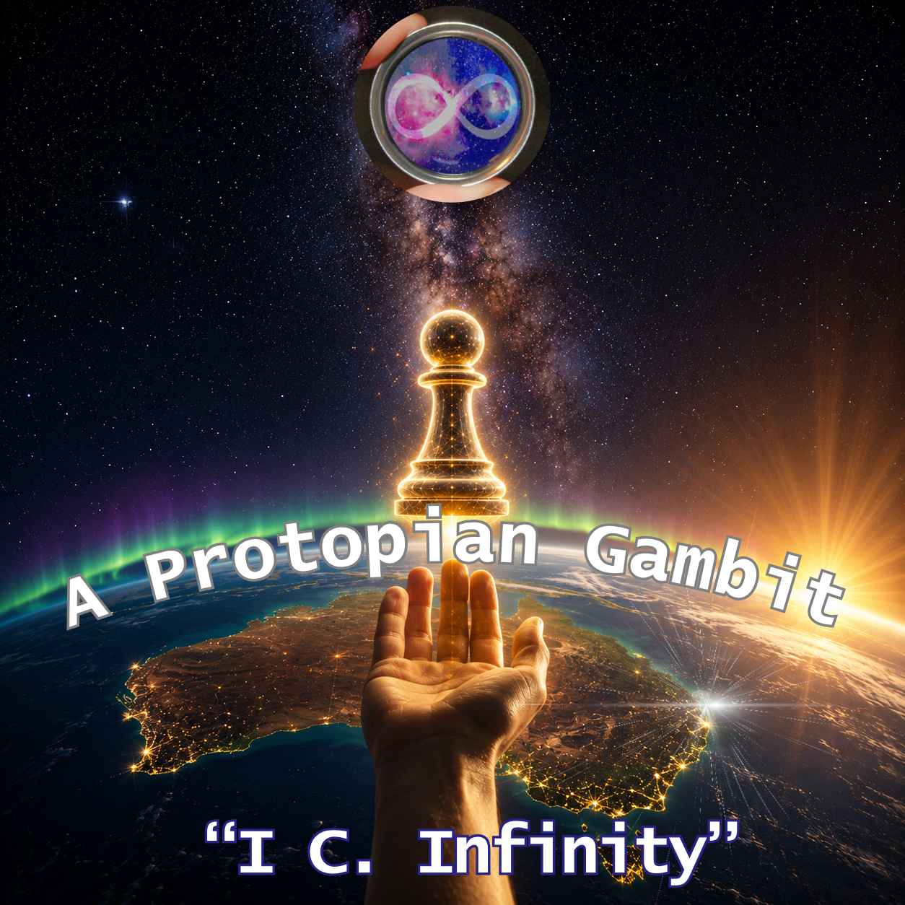

Starseed Code: From Aura to Infinity
Album 3 connects Aura, love, Minjerribah, global relationships and larger futures. It offers emotional continuity across ideas that appear separately elsewhere on the site.
Chapter 05 of 13 | Songs and stories
Music, comedy and story are not decorations around Luke's serious work. They are working instruments for feeling a system, testing a world and keeping emotional truth present while the technical language catches up.

I use songs, stories and jokes to let people feel the system before asking them to study it. A song can carry love, anger, grief, civic frustration or cosmic possibility without squeezing it into a policy paper.
i C. infinity is where I sing the worlds. Loose Goose lets me turn a hard truth through different comedy lenses without losing the core fact. Tiggy Bestmann is the romantic traveller in me. Australian Sire is the hotter fantasy register, a name earned in the books through wins, promises and trust. They remain two sides of the same protagonist. Cosmic Nexus is where mystery, travel, maps and film can meet.
The albums move between inner life, island life, public systems and futures that are still being imagined.
Album 3 connects Aura, love, Minjerribah, global relationships and larger futures. It offers emotional continuity across ideas that appear separately elsewhere on the site.
Album 4 moves through consent, repair, civic systems, borders, humour, ancestry, latent space and infinity. Repeated titles may represent working versions and should not be silently collapsed.
Album 5 turns local places, wildlife, fishing, sport, friendship and practical work into an island songbook. The source sequence remains provisional.
Comedy and story change the lens while the source boundary remains visible.
A live tool that keeps one stubborn truth underneath comic transformations and rhythm scoring. The joke can change costumes without changing what happened.
Follow this into the live workThis is where Tiggy Bestmann and Australian Sire move through romantasy and science-fiction: maps become seductions, rules become obstacles, and a name is earned through what the character actually does.
Follow this into the live workA public room for mystery, maps, travel, source trails and possible film expeditions. It can hold curiosity without turning every strange possibility into a factual conclusion.
Follow this into the live workLet this chapter sound like
Album 4: A Protopian Gambit
It is a central bridge between the emotional, civic and speculative worlds gathered on this page.
The lyric is here now. Luke will add the video when the right recording reaches this laptop.The songs do not have to footnote every feeling. They keep open the reasons I cared enough to build any of this at all.